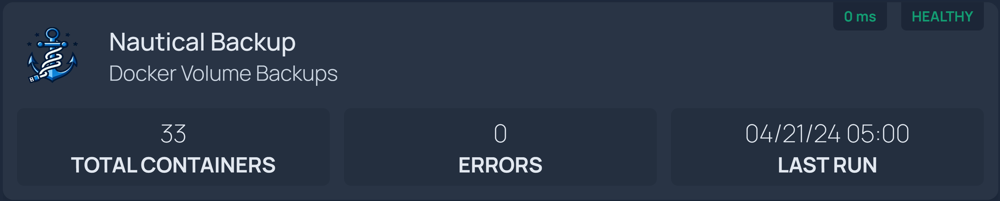

Homepage Dashboard
Homepage is a modern, fully static, fast, secure fully proxied, highly customizable application dashboard with integrations for over 100 services and translations into multiple languages. Easily configured via YAML files or through docker label discovery.

Add Nautical to Homepage¶
We are going to take advantage of Homepage's Custom API Widget to get the following result:

Our configuration will look something like this:
- Nautical Backup:
icon: https://raw.githubusercontent.com/Minituff/nautical-backup/main/docs/media/Logo-large.png
description: Docker Volume Backups
widget:
type: customapi
url: http://<nautical-ip>:8069/api/v1/nautical/dashboard
username: admin
password: password
method: GET
mappings:
- field: number_of_containers
label: Total Containers
- field: completed
label: Completed
- field: skipped
label: Skipped
- field: errors
label: errors
- field: last_cron
label: Last Run
format: relativeDate # (1)!
- field: next_cron
label: Next Run
-
Here, you can set an additional property called
formatto one of these options:relativeDateexample: 10 hours agodateremoves the exact time and shows the day only
You can also add this to the
next_cronfield.
It is recommended that you don't enable all the fields. Just comment out the fields that you don't need.
Field Translation
{
"next_cron": {
"1": [
"Monday, April 22, 2024 at 05:00 AM",
"04/22/24 05:00"
],
"2": [
"Tuesday, April 23, 2024 at 05:00 AM",
"04/23/24 05:00"
],
"3": [
"Wednesday, April 24, 2024 at 05:00 AM",
"04/24/24 05:00"
],
"4": [
"Thursday, April 25, 2024 at 05:00 AM",
"04/25/24 05:00"
],
"5": [
"Friday, April 26, 2024 at 05:00 AM",
"04/26/24 05:00"
],
"cron": "0 5 * * *",
"tz": "America/Los_Angeles"
},
"last_cron": "04/21/24 05:00",
"next_run": "04/22/24 05:00",
"number_of_containers": 33,
"completed": 25,
"skipped": 8,
"errors": 0,
"backup_running": 8
}